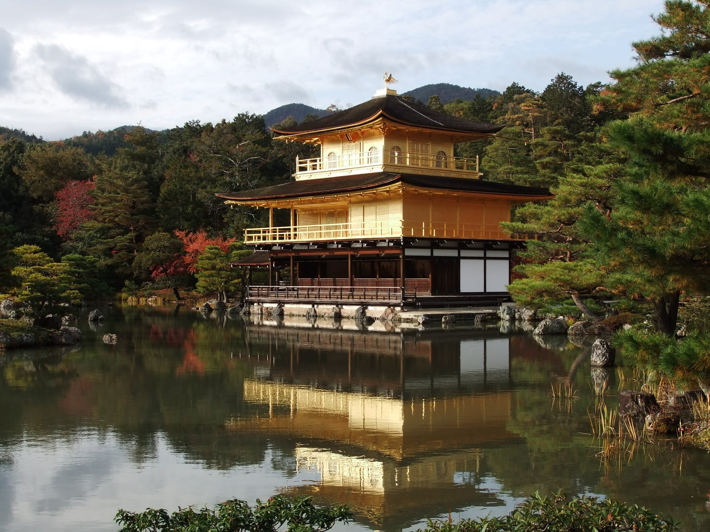

Welcome to beautiful Kyoto!
Kyoto was the former capitol of Japan, renowned for it's beautiful bamboo forests, Buddhist temples, and serene lakeviews.
Kyoto is Japan in a nutshell. It’s the cultural and historical heart of the country. It’s the best place in all Japan to experience traditional temples, shrines, gardens, geisha, shops, restaurants and festivals. In short, Kyoto is the most rewarding destination in all of Japan and it should be at the top of any Japan travel itinerary. Indeed, I may be biased, but I’d go so far as to say that Kyoto is the most rewarding single city in all of Asia.
- Chris Rowthorn, InsideKyoto.com